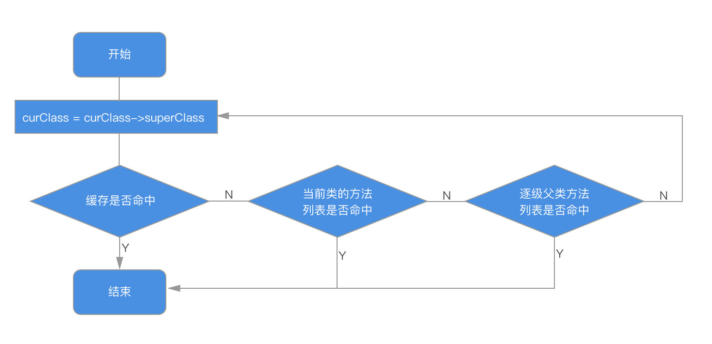

本文所使用的源码为 objc4-756.2
Objc是一门动态语言，使用“消息结构”（messaging structure）而非“函数调用”（function calling），前者代码的执行由运行时环境决定，后者由编译器决定。Runtime基本是用 C 和汇编写的，提供Objc的运行时系统，执行编译后的代码。这里可下载苹果维护的开源代码
基础数据结构
基础数据结构关系图
id
1 | typedef struct objc_object *id; |
id是一个指向实例的指针，也就是某个类的实例对象。结构体中包含一个 isa 指针，定义了实例所属的类型，通常称为 “is a” 指针。
isa
1 | union isa_t { |
1 |
|
SUPPORT_NONPOINTER_ISA 用于标记是否支持优化的 isa 指针，其字面含义意思是 isa 的内容不再是类的指针了，而是包含了更多信息
| 变量名 | 含义 |
|---|---|
indexed |
0 表示普通的 isa 指针，1 表示使用优化，存储引用计数 |
has_assoc |
表示该对象是否包含 associated object |
has_cxx_dtor |
表示该对象是否有 C++ 或 ARC 的析构函数 |
shiftcls |
类的指针 |
magic |
判断对象是否初始化完成 |
weakly_referenced |
表示该对象是否有过 weak 对象 |
deallocating |
表示该对象是否正在析构 |
has_sidetable_rc |
判断是否需要用 sidetable 去处理引用计数，（ extra_rc 的大小会影响到这个变量），若需要则表示该对象的引用计数值过大无法存储在 isa 指针 |
extra_rc |
存储该对象的引用计数值减一后的结果 |
Class
1 | typedef struct objc_class *Class; |
objc_class 结构体继承自 objc_object ，说明 Class 本身也是Objc对象，称为类对象，而类对象所属的类型被称为做 元类（metaclass），用来描述类对象本身所具备的元数据。“类方法”定义于此，这些方法可以理解成类对象的实例方法。
- 类与元类
当发出一个类似 [OC runtime] 的消息时，事实上是把这个消息发给了一个类对象 (Class Object) ，Objc会去它的元类里面去查找能够响应消息的方法，找到就会执行其IMP，如果没有找到，则会当前元类的 superClass 所指向的元类中方法列表中寻找直至到根元类的方法列表。如果过程都没有找到对应的类方法实现，就会到NSObject 根类寻找，因为根元类的 superClass 指向 NSObject 根类。如果NSObject的类方法列表中没有找到对应的方法，则继续会查找NSObject的实例方法列表，那么如果NSObject中（分类）有对应的同名的实例方法，则会产生实际的调用，系统会执行同名的实例方法。
- Tips :
isa指针不总是指向实例对象所属的类，不要用isa来判断一个类的继承关系，而是应该用class方法来判断实例的类。因为KVO的实现机理就是将被观察对象的isa指针指向一个中间类而不是真实的类，这是一种叫做isa-swizzling的技术，后面会介绍。
cache_t
1 | struct cache_t { |
每当实例对象接收到一个消息时，它不会直接在isa指向的类的方法列表中遍历查找能够响应消息的方法，而是优先在 cache 中（哈希）查找。Runtime 系统会把被调用的方法存到 cache中（理论上讲一个方法如果被调用，那么它有可能今后还会被调用），下次查找的时候效率更高，实际这体现来局部性原理的应用。
cache是一个可增量扩展的哈希表结构，buckets 存储 IMP，bucket_t 存储 指针 与 IMP 的键值对。
1 | struct bucket_t { |
class_data_bits_t
1 | struct class_data_bits_t { |
回看 objc_class 的结构体，objc_class 的 data 方法直接将 class_data_bits_t 的 data 方法返回，最终是返回 class_rw_t。而class_data_bits_t 里又包一个 bits，这个指针跟不同的 FAST_ 前缀的 flag 掩码做按位与操作，就可以获取不同的数据。此处待学。
class_rw_t
1 | struct class_rw_t { |
class_rw_t 的内容是可以在运行时被动态修改的，运行时对类的拓展大都是存储在这里。method_array_t, property_array_t, protocol_array_t 均继承自 list_array_tt, 这是一个可以不断扩张的结构。
class_ro_t
1 | struct class_ro_t { |
class_rw_t 结构体包含 class_ro_t 的指针，class_ro_t 存储的大多是类在编译时就已经确定的信息，不可扩展，从名字也能看出二者的区别。method_list_t, ivar_list_t, property_list_t 结构体均继承自 entsize_list_tt。
Category
1 | struct category_t { |
我们可以在分类中添加实例方法、类方法以及协议。App启动时，系统会调用 attachCategories 函数向 class_rw_t 中的 method_array_t, property_array_t, protocol_array_t 数组中分别添加 method_list_t, property_list_t, protocol_list_t 指针。但是我们不能直接添加属性，它们无法把实现属性所需的实例变量合成出来。不过有时只读属性还是可以在分类中使用的：获取方法不访问数据，同时属性也不需要由实例变量来实现。实际上我们可以关利用关联对象的技术为分类添加属性，会在应用中详细介绍
SEL
1 | typedef struct objc_selector *SEL; |
是 selector 在 Objc 中的表示类型。其实它就是个映射到方法的 C 字符串，可以用 Objc 编译器命令 @selector() 或者 Runtime 系统的 sel_registerName 函数来获得一个SEL类型的方法选择器
IMP
1 | /// A pointer to the function of a method implementation. 指向一个方法实现的指针 |
就是指向最终实现程序的内存地址的指针。
Method
1 | typedef struct method_t *Method; |
在Runtime中，Method通过selector和IMP两个属性，实现了快速查询方法及实现，相对提高了性能，又保持了灵活性
Ivar
1 | typedef struct ivar_t *Ivar; |
Ivar是对象中实际储存信息的变量，结构为 ivar_t 。offset 代表了这个变量在内存中相对所属对象内存空间起始地址的偏移量,偏移量大小根据类型来定。可以通过class_copyIvarList获取对象中的属性：
1 | Ivar *class_copyIvarList(Class cls, unsigned int *outCount) |
该方法返回的是一个 Ivar指针，指向属性列表数组的指针
1 | //获取属性名称 |
objc_property_t
1 | typedef struct property_t *objc_property_t; |
我们用 @property 标记类中的属性，结构为property_t。可以通过 class_copyPropertyList 方法来获取类中的属性：
1 | objc_property_t *class_copyPropertyList(Class cls, unsigned int *outCount) |
该方法返回的是一个 objc_property_t指针，指向属性列表数组的指针
1 | //获取属性名称 |
消息传递
在Objc中，当我们执行如下代码时：
1 | id returnValue = [someObject messageName:parameter]; |
编译器会将其转化为一条标准的C语言函数调用，所调用的函数乃是消息传递机制中的核心函数 objc_msgSend ，其原型如下：
1 | void objc_msgSend(id self, SEL cmd, ...) |
- 第一个参数 代表消息接受者
receiver - 第二个参数 代表选择子（
SEL代表选择子的类型） - 选择子与参数合起来称为
消息（message）
- 编译器关键字
super1
2
3
4
5
6
7
8
9
10
11
12
13
14/// Specifies the superclass of an instance.
struct objc_super {
/// Specifies an instance of a class.
__unsafe_unretained _Nonnull id receiver;
/// Specifies the particular superclass of the instance to message.
/* For compatibility with old objc-runtime.h header */
__unsafe_unretained _Nonnull Class class;
__unsafe_unretained _Nonnull Class super_class;
/* super_class is the first class to search */
};
objc_super 结构体中，第一个属性是 receiver，这个类似 objc_msgSend 的第一个参数 receiver ，接受消息是 self 即实例对象，所以当我们[super class]时，等同于调用[self class]
- 消息发送过程：
- 首先类的
cache，若找到则执行它的实现IMP；如果cache找不到就会查找 Class 的方法分发表 - 如果分发表找不到，就查找超类的
cache及 方法分发表，直至NSObject类为止父类逐级查找
- 如果找不到会开始进入动态方法解析
- 如果找不到会找有没有备选对象
- 如此刻还是找不到，就会进行消息转发
动态方法解析
因为Objc是一门动态语言，所以我们可以动态的提供一个方法的实现。例如我们可以用@dynamic关键字在类的实现文件中修饰一个属性，编译器就不会再默认为我们自动合成存取方法，而需要我们动态提供。
对象在收到无法解读的消息后，首先将调用其所属类的下列方法：
1 | + (BOOL)resolveInstanceMethod:(SEL)selector |
我们可以通过分别重载resolveInstanceMethod:和resolveClassMethod:方法分别添加实例方法实现和类方法实现。因为当 Runtime 系统在Cache和方法分发表中（包括超类）找不到要执行的方法时，Runtime会调用resolveInstanceMethod:或resolveClassMethod:来给程序员一次动态添加方法实现的机会。我们需要用class_addMethod函数完成向特定类添加特定方法实现的操作：
1 | - (void)viewDidLoad { |
上面的例子为dynamicMethod方法添加了实现内容，也就是dynamicMethodIMP方法中的代码。其中 v@: 表示返回值和参数，这个符号涉及 Type Encoding
备援接受者
在消息转发机制执行前，Runtime 系统会再给我们一次偷梁换柱的机会，即通过重载- (id)forwardingTargetForSelector:(SEL)aSelector方法替换消息的接受者为其他对象：
1 | - (id)forwardingTargetForSelector:(SEL)aSelector |
如果想替换类方法的接受者，需要覆写 + (id)forwardingTargetForSelector:(SEL)aSelector 方法，并返回类对象：
1 | + (id)forwardingTargetForSelector:(SEL)aSelector { |
消息转发
如果在上一步还不能处理未知消息，那么接下来将进入消息转发阶段，完整的消息转发过程如下：
首先创建 NSInvocation 对象，把尚未处理的那条消息有关的全部细节都封于其中。包括选择子、目标（target）及参数。在触发 NSInvocation 对象时，“消息派发系统”（message-dispatch system）将会亲自出马，把消息指派给目标对象。此步骤会调用以下方法：
1 | - (void)forwardInvocation:(NSInvocation *)anInvocation |
实现此方法时，若发现某调用操作不应由本类处理，则需要调用超类的同名方法，直至 NSObject 。如果还未找到接受者，那么该方法会调用 doesNotRecognizeSelector: 以抛出异常表明选择子最终未能得到处理。
不过我们可以通过重写 forwardInvocation: 方法来避免抛出这种异常：替换消息的接受者为其他对象。但是此时我们需要NSInvocation 对象，在forwardInvocation:消息发送前，Runtime系统会向对象发送methodSignatureForSelector:消息，并取到返回的方法签名用于生成NSInvocation对象。所以我们在重写forwardInvocation:的同时也要重写methodSignatureForSelector:方法，否则会抛异常。
完整转发的例子:
1 |
|
应用
关联对象
当我们需要动态的给某个对象关联一些其他对象时，比如：我们无法在分类中添加 @property，因为系统并不会自动帮我们生成实例变量以及存取方法，但是关联对象（Associated Object）可以帮我们实现。这些关联对象是通过 “键” 来区分的，可以指明 ”存储策略“（storage policy），用以维护对应的 “内存管理语义”。
| 关联类型 | 等效的@property |
|---|---|
| OBJC_ASSOCIATION_ASSIGN | assign |
| OBJC_ASSOCIATION_RETAIN_NONATOMIC | nonatomic ， retain |
| OBJC_ASSOCIATION_COPY_NONATOMIC | nonatiomic ， copy |
| OBJC_ASSOCIATION_RETAIN | retain |
| OBJC_ASSOCIATION_COPY | copy |
关联对象Runtime提供了下面几个接口：
1 | /** |
1 | void objc_setAssociatedObject(id object, const void *key, id value, objc_AssociationPolicy policy){ |
这里出现了几个新的数据结构，AssociationsManager、AssociationsHashMap和ObjectAssociationMap。
(1)AssociationsManager是AssociationsHashMap的单例。
(2)AssociationsHashMap是unordered_map<disguised_ptr_t, ObjectAssociationMap *>的哈希表。
(3)ObjectAssociationMap是map<void *, ObjcAssociation>的容器。
(4)ObjcAssociation定义如下，保存着值和存取策略：
class ObjcAssociation{
uintptr_t policy;
id _value;
};
这样的话就比较明确了，通过以下方式来保存着一个ObjcAssociation对象。
AssociationsManager->AssociationsHashMap[DISGUISE(object)]->ObjectAssociationMap [key]->ObjcAssociation。
而objc_setAssociatedObject的逻辑也比较简单，如果没有对应的ObjectAssociationMap就重新插入一个，如果已经有了则赋新值，并将原来的释放掉，如果设置为nil则是删掉对应的ObjectAssociationMap。
在关联对象中，如果想要两个键匹配同一个值，则二者必须是完全相同的指针。因此在设置关联对象的时候，都是通过使用静态全局变量作为键。比如在分类中动态添加属性：
1 |
|
Isa Swizzling (KVO)
根据名字可以看出来，实质是交换 isa 指针，KVO ( Key-value observing ) 就用到了 Isa Swizzling 技术。
1 | - (void)addObserver:(NSObject *)observer forKeyPath:(NSString *)keyPath options:(NSKeyValueObservingOptions)options context:(nullable void *)context; |
当我们调用 addObserver: 方法之后，系统会创建一个继承自当前类的新类 NSKVONotifying_A ，并把当前实例的 isa 指针指向 NSKVONotifying_A ，同时在 NSKVONotifying_A 里面重写setter、dealloc、_isKVOA等相关方法
- Tips : self.property 和 _property 两种访问方式的区别
self.property _property 通过属性访问，即通过 setter和getter方法，所以需要经过方法派发（method dispatch）直接访问，绕开存取方法，不经过方法派发，所以访问速度相对来说快一些 因为绕开存取方法，所以也就饶过了相关属性定义的内存管理语义。exc： ARC下访问copy的属性，那么不会拷贝该属性，只会保留新值并释放旧值不会触发 KVO懒加载方式的属性，必须通过存取方法来访问
但是 KVO的回调机制存在一个明显的缺陷：不会传一个selector或者block作为回调，而是必须重写-addObserver:forKeyPath:options:context:方法，如果存在多个属性的监听，就需要在方法里面写很多的if-else的判断。
实现多继承
当消息进入到寻找备援接受者阶段时，若当前接受者能找到备援对象，则将其返回，若找不到，就返回 nil。此时我们就可以模拟出来“多重继承”（multiple inheritance）的某些特性。在一个对象内部，可能还有一系列其他对象，该对象可经由此方法将能够处理某选择子的相关内部对象的返回，这样的话，在外界看来，好像是该对象亲自处理了这些消息似的。
此步骤可参考消息消息转发流程的寻找消息备援接受者的操作，来替换消息的接受者。
Method Swizzling
在运行时通过修改类的分发表中selector对应的函数，来修改其方法的实现，实质是对 IMP 和< code>SEL< code> 进行交换，主要用到的函数如下：
1 | OBJC_EXPORT BOOL |
1 | + (void)load { |
swizzling 应该只在+load中完成。 在 Objective-C 的运行时中，每个类有两个方法都会自动调用。+load 是在一个类被初始装载时调用，+initialize 是在应用第一次调用该类的类方法或实例方法前调用的。两个方法都是可选的，并且只有在方法被实现的情况下才会被调用。
swizzling应该只在 dispatch_once 中完成,由于 swizzling 改变了全局的状态，所以我们需要确保每个预防措施在运行时都是可用的。原子操作就是这样一个用于确保代码只会被执行一次的预防措施，就算是在不同的线程中也能确保代码只执行一次。Grand Central Dispatch 的 dispatch_once 满足了所需要的需求，并且应该被当做使用swizzling 的初始化单例方法的标准
- 实际应用场景
字典和模型的自动转换
字典转模型
1.调用 class_getProperty 方法获取当前 Model 的所有属性。
2.调用 property_copyAttributeList 获取属性列表。
模型转字典
1.调用 class_copyPropertyList 方法获取当前 Model 的所有属性。
2.调用 property_getName 获取属性名称。